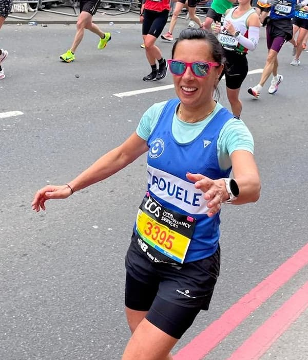
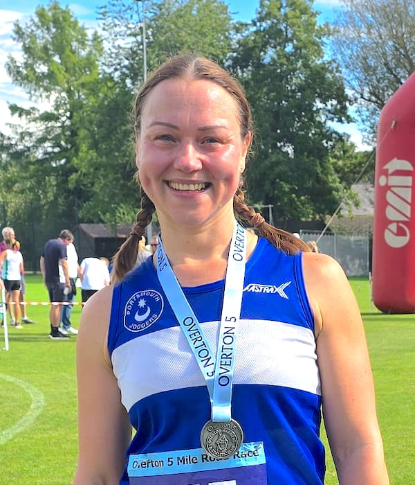

The Purbrook Ladies 5 is our ladies-only road race, organised by our Race Directors Rachel Thomas and Naouele McHugh. Starting out as a 6 mile race back in 1984, the race has inevitably changed over the years. It is now a 5 mile route that takes in the lovely lanes and countryside around Purbrook, and has a reputation for some fantastic post-race goodies (if we do say so ourselves!). The race is a firm favourite amongst the female running community and sells out very quickly every year.
2025 Race Information
- Race date
- Sunday, 8th June 2025
- Entries open
- Sold out! Find transfers on the Facebook group
- Training starts
- Wednesday, 30th April 2025 (get familiar with the course!)
- Latest updates
- See Facebook and Instagram, or email questions to ladies5@pjc.org.uk
Now, who's excited to get back to training and get on those little lady lumps?
2024 RD's Race Report
Our ladies who run this race are absolutely awesome and inspiring. They have downright smashed each and every race we've put on and 2024 was no exception.
Again, the weather was kind to the supporters, but hot for the ladies on the course....but did that stop them bringing this race home. Nope, they powered on and smashed it. They should be very proud - we are both very proud of all the ladies who turn up.
We honestly can't say it enough, you ladies are awesome.
Also a big shout out to all the fantastic volunteers headed up by Pete Birch, Big George (Garratt) on lead bike, and our amazing sweeper, Eileen Conway, and a very special shout out to our chief marshall Chris Gambs. This was Chris' last one with us and we would like to send him big love, hugs and thanks for supporting us over the last 6 years. We truly couldn't do this without all of you and Chris's "bible”.
This race is only as good as the support we get from each and every one of those who take part and those who volunteer and you always make sure this race is a success.
Just after the start in 2024

Naouele has been a Jogger for over 15 years. She has enjoyed training for marathons and representing us at lots of local races. She and Rachel became race directors for the Purbrook Ladies 5 in 2018 and love putting on the race for the ladies in the local running community.

Rachel started with PJC back in 2017 when she completed her first Purbrook Ladies 5 (finishing 5th) and was hooked by the support of the Joggers. The following year, she became one-half of the PL5 Race Directorship and is still RDing today. Rachel has also completed a number of marathons and ultra-marathons.